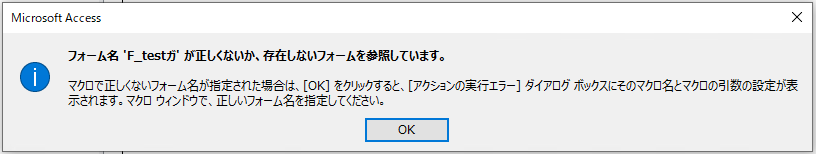
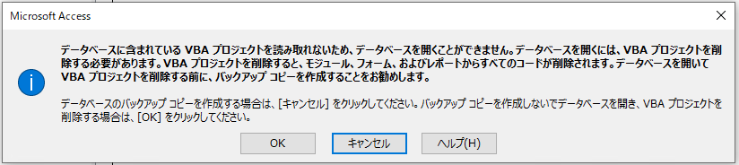

※2020/10/28 OS 観点での回避方法 (3-3) を追加しました。
※2021/06/03 OS 21H1 も本現象の発生対象バージョンであることを追加しました。
※2021/10/18 OS 21H2 も本現象の発生対象バージョンであること、回避方法の補足、今後の修正について追記しました。
こんにちは、Office サポート チームの佐村です。
今回の記事では、Windows 10 バージョン 2004 以降で半角カナ + カナに濁音 / 半濁音を含んでいる Access ファイルを開くとエラーが発生する状況について説明します。
(Access のバージョンに依存性はなく Windows 10 バージョン 2004 / 20H2 / 21H1 / 21H2 上での Access アプリケーションで発生します。)
1. 現象
Windows 10 バージョン 2004 以降で Access ファイルを開いた時、VBA を実行しようとしたとき、VBA プロジェクトを開こうとしたとき等に以下のようなエラーが発生する可能性があります。
・フォーム名 ‘半角カナを含んだフォーム名’ が正しくないか、存在しないフォームを参照しています。

・データベースに含まれている VBA プロジェクトを読み取れないため、データベースを開くことができません。

「データベースに含まれている VBA プロジェクトを～」のエラーダイアログで「OK」ボタンをクリックするとファイルに保存されている VBA プロジェクトが全て削除され、Access ファイルは操作の都度保存されるため VBA プロジェクトが削除された状態でファイルが自動保存されてしまい、コードが消失して復元ができなくなる可能性があります。
また、フォームとの不整合状態が保持されることで以前の OS 上の Access で該当のファイルを開いても VBA が正しく参照できないといった問題が発生します。
この動作が生じる条件は以下になります。
問題発生条件
・Windows 10 OS バージョン 2004 以降である。(Windows 11 では本現象は発生しません。)
・Access ファイル内のフォーム名に半角カタカナを利用して濁音、半濁音のいずれかが含まれている。
この条件を満たす場合、フォームに紐づく VBA プロジェクトが存在している場合や、半角カナのサブフォームを指定する際に全角で指定していると上記であげたエラーが発生します。
2. 原因の説明
Access アプリケーションでは、フォーム名に関して OS で用意している機能を利用し、半角と全角とを区別せずに比較しています。
そのため、以前の OS では “ガ” と “ガ” のような全角 / 半角は同じ文字列として判定されていましたが、Windows 10 バージョン 2004 以降では OS の自然言語処理を担う NLS (National Language Support) バージョンが更新 (6.3) され異なる文字列として判定されてしまいます。
これによって内部管理上同じとみなされることが期待されるフォームが異なるものとして認識されるためにエラーが発生します。
3. 対応方法
本問題について確認し、修正方法を検討いたしましたが、更新プログラム等で現在の NLS バージョン (NLS 6.3) に対する更新は仕様上出来ないことを確認いたしました。
自然言語処理を担う NLS の定義に基づいて発生している問題となりますが、NLS の性質上、既存のモジュールと修正されたモジュールがネットワークシステム上で混在すると解決の難しい不整合が生じる可能性があり、そのような状況を避けるため一度リリースされた NLS バージョンの内容を修正することができません。
3-1. Access アプリケーション観点 - Access の EXE (MSACCESS.EXE) について、”Windows 8” の互換設定を行う
エクスプローラーで MSACCESS.EXE までを展開し、MSACCESS.EXE のプロパティから互換モードで動作するように変更します。

※OfficeNN バージョン番号
Office16 : Microsoft 365 Apps (Office 365 ProPlus) / Office 2019 / Office 2016
Office15 : Office 2013
Office14 : Office 2010
-ご参考
タイトル : クイック実行形式 (C2R) と Windows インストーラー形式 (MSI) を見分ける方法
URL : https://officesupportjp.github.io/blog/クイック実行形式 (C2R) と Windows インストーラー形式 (MSI) を見分ける方法/
<設定変更方法 (C2R版 Office の場合)>
-———————–
・エクスプローラー上から、MSACCESS.EXE を右クリックし、「プロパティ」を選択します。
・MSACCESS.EXE のプロパティ画面で「互換性」タブを選択します。
・「互換モードでこのプログラムを実行する」のチェックを ON にしてターゲットとして Windows 8 が選択されていることを確認します。
・「OK」ボタンをクリックします。
※元の設定に戻す場合は「互換モードでこのプログラムを実行する」のチェックを OFF にします
-———————–
<設定変更方法 (MSI版 Office の場合)>
-———————–
・エクスプローラー上から、MSACCESS.EXE を右クリックし、「互換性のトラブルシューティング」を選択します。
・「推奨設定を使用する」を選択する。
・Windows 互換モード : Windows 8 となっていることを確認し「プログラムのテスト」ボタンをクリックします。
・Access アプリケーションが起動したら×ボタンで閉じて「次へ」ボタンをクリックします。
・「はい、このプログラムのこの設定を保存します」を選択します。
・「閉じる」ボタンでトラブルシューティングツールを閉じます。
※元の設定に戻す場合は以下のレジストリ配下の MSACCESS への設定を削除します。
HKCU\Software\Microsoft\Windows NT\CurrentVersion\AppCompactFlags\Layers
-———————–
なお、Access をはじめ Office アプリケーションは互換性を変更した検証は実施しておらず、
互換性を変更して動作させた場合に、予期しない動作が発生することがございます。
3-2. Access ファイル観点 - Access のフォームで半角カタカナを全角カタカナに変更する
Windows 10 の OS 1909 等、以前の問題が発生しない OS バージョンでフォーム等の半角カタカナを全角カタカナに統一します。
VBA コードに半角カナでフォームを指定している場合等、半角カタカナのフォームを参照している処理は全角カナに修正する必要があります。
3-3. OS 観点 – Windows OS の NLS バージョンを 6.3 から 6.2 に変更する
問題の発生しない NLS バージョン 6.2 (以前の OS で利用されていたバージョン) を利用することで本問題は発生しません。レジストリを変更して対処する必要があります。
<レジストリ NLS\Version の値の変更手順>
- 以前の NLS バージョンに戻す場合 (Access のエラーを回避する)
キー : [HKEY_LOCAL_MACHINE\SYSTEM\CurrentControlSet\Control\Nls\Sorting\Versions]
名前 : 既定
値 : 0006020F
コマンド) REG ADD HKLM\SYSTEM\CurrentControlSet\Control\Nls\Sorting\Versions /ve /d 0006020F /f
※管理者として起動したコマンドプロンプトで実行ください。
- バージョン 2004 / 20H2 の既定値 (Access のエラーが発生) に戻す場合
コマンド) REG ADD HKLM\SYSTEM\CurrentControlSet\Control\Nls\Sorting\Versions /ve /d 00060305 /f
注意点
本レジストリの変更で NLS バージョンを 6.2 に変更した OS についても弊社にてサポートいたします。
しかしながら、Windows のライセンス認証において本設定を行うと正常にライセンス認証が行われない場合があることを確認しております。
タイトル : April 25, 2022—KB5011831 (OS Builds 19042.1682, 19043.1682, and 19044.1682) Preview
URL : https://support.microsoft.com/en-us/help/5011831
ご利用の OS のバージョン、ビルドが問題回避後のビルドであることをご確認ください。
なお、アプリケーションの実装やビジネスロジックによっては、ソートの整合が崩れたり、データが不正となる可能性がありますので、何か問題が発生してお問い合わせいただく場合には、NLS バージョンを 6.2 に変更して運用していることを随時担当エンジニアにお知らせくださいますようお願いいたします。
また、NLS バージョン 6.3 では合字データ (㋿ や ㍻) のソート順を変更していますので、合字を利用する場合にこのソート順が
変わります (Windows 10 バージョン 1909 と同じになる) ことも合わせてご了承ください。
バージョン 6.2 昇順 : ㋿ ㍻ ㍾ ㍼
バージョン 6.3 昇順 : ㍾ ㍼ ㍻ ㋿
ユーザーや管理者による対処不要で、更新プログラム適用等で対処ができず申し訳ありませんが、
問題によって NLS バージョンの値を変更するか、MSACCESS.EXE の互換モードを下げるという
対処が必要となりますことご了承くださいますようお願いいたします。
3-4. OS 観点 – Windows OS の NLS バージョンを 6.3 から 6.4 に変更する
タイトル : June 2, 2022—KB5014023 (OS Builds 19042.1741, 19043.1741, and 19044.1741) Preview
URL : https://support.microsoft.com/en-us/help/5014023
ご利用の OS のバージョン、ビルドをご確認いただき上記のビルド以降の OS にて以下のレジストリ変更を実施ください。
<レジストリ NLS\Version の値の変更手順>
- 新しい NLS バージョンに変更する場合 (Access のエラーを回避する)
キー : [HKEY_LOCAL_MACHINE\SYSTEM\CurrentControlSet\Control\Nls\Sorting\Versions]
名前 : 既定
値 : 00060403
コマンド) REG ADD HKLM\SYSTEM\CurrentControlSet\Control\Nls\Sorting\Versions /ve /d 00060403 /f
※管理者として起動したコマンドプロンプトで実行ください。
注意点
本レジストリの変更で NLS バージョンを 6.4 に変更した OS についても弊社にてサポートいたします。
なお、アプリケーションの実装やビジネスロジックによっては、ソートの整合が崩れたり、データが不正となる可能性がありますので、何か問題が発生してお問い合わせいただく場合には、NLS バージョンを 6.4 に変更して運用していることを随時担当エンジニアにお知らせくださいますようお願いいたします。
補足
一度エラーが発生した Access ファイルは不整合の内容を保持しているため、上記対応方法を実施後もエラーが発生する可能性がございます。その場合、バックアップファイルから戻すといった修正が必要になります。
今後の方針や追加の回避方法等が分かり次第本資料を更新します。
本情報の内容 (添付文書、リンク先などを含む) は、作成日時点でのものであり、予告なく変更される場合があります。